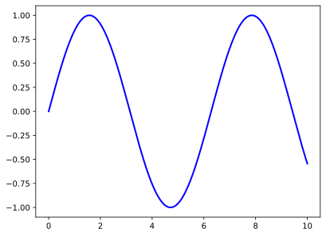
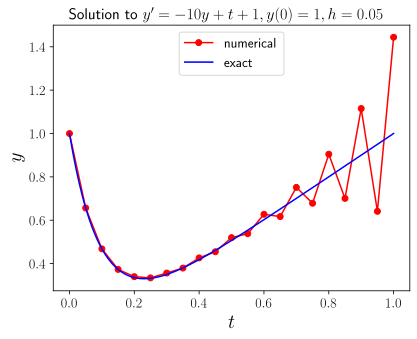

TEST ONLY#
This chapter is just for testing jupyter-book functionality.
Here’s my sentence and a sidenote1And here’s my sidenote content..
Here’s my sentence and a marginnote And here’s my marginnote content..
1print("A code block with a caption and line numbers.")
2print("A code block with a caption and line numbers.")
3print("A code block with a caption and line numbers.")
1printf("A code block with a caption and line numbers.")
2printf("A code block with a caption and line numbers.")
3printf("A code block with a caption and line numbers.")
1int main()
2{
3 fprintf("Hello World C!\n");
4 return 0;
5}
1#include <iostream>
2using namespace std;
3int main()
4{
5 cout<<"Hello World C++|"<<endl;
6 return 0;
7}
1program main
2 implicit none
3
4 print*,'Hello World Fortran'
5end program main
This is a normal reST paragraph that contains several
This is a normal reST codeblock that contains several
First two tabs showing off defining a function.
def main():
print("Hello World Python!")
return
int main(const int argc, const char **argv) {
fprintf("Hello World C++!\n");
return 0;
}
program main
print*,'Hello World!'
end program main
Second two tabs showing off printing.
print("Hello World!")
#include <iostream>
int main() {
std::cout << "Hello World!" << std::endl;
}
note = "Python syntax highlighting"
print(note)
Python syntax highlighting
from myst_nb import glue
import sympy as sym
x, y = sym.symbols('x y')
z = sym.Function('z')
z = sym.sqrt(x**2+y**2)
glue("example_eq", z, display=False)
To glue a math equation try
(7)#\[\displaystyle \sqrt{x^{2} + y^{2}}\]
from myst_nb import glue
import matplotlib.pyplot as plt
import numpy as np
x = np.linspace(0, 10, 200)
y = np.sin(x)
fig, ax = plt.subplots()
ax.plot(x, y, 'b-', linewidth=2)
glue("glued_fig", fig, display=False)

This is an inline glue example of a figure: . This is an example of pasting a glued output as a block:
from myst_nb import glue
import numpy as np
import pandas as pd
ss = pd.Series(np.random.randn(4))
ns = pd.Series(np.random.randn(100))
glue("ss_mean", ss.mean())
glue("ns_mean", ns.mean(), display=False)
-0.35281347818705194
Here is an example of how to glue numbers: -0.35281347818705194 and 0.05229481539594213.
A big code cell#
import math
from fractions import Fraction
a0=0;
a1=0;
a2=0;
a3=-1;
a4=1;
b0=Fraction(-9, 24);
b1=Fraction(37, 24);
b2=Fraction(-59, 24);
b3=Fraction(55, 24);
b4=0;
c0= a0+a1+a2+a3+a4;
c1= (a1+2*a2+3*a3+4*a4)-(b0+b1+b2+b3+b4);
c2= (a1+2**2*a2+3**2*a3+4**2*a4)/math.factorial(2)-(b1+2*b2+3*b3+4*b4)/math.factorial(1);
c3= (a1+2**3*a2+3**3*a3+4**3*a4)/math.factorial(3)-(b1+2**2*b2+3**2*b3+4**2*b4)/math.factorial(2);
c4= (a1+2**4*a2+3**4*a3+4**4*a4)/math.factorial(4)-(b1+2**3*b2+3**3*b3+4**3*b4)/math.factorial(3);
c5= (a1+2**5*a2+3**5*a3+4**5*a4)/math.factorial(5)-(b1+2**4*b2+3**4*b3+4**4*b4)/math.factorial(4);
print([c0, c1, c2, c3, c4, c5])
[0, Fraction(0, 1), 0.0, 0.0, 0.0, 0.3486111111111114]
Another big code cell#
Show code cell source
import math
import numpy as np
import matplotlib.pyplot as plt
plt.rcParams['text.usetex'] = True
def f(t,lam,y):
return lam*(-y+t)+1;
def yexact(t,lam):
return math.exp(-lam*t)+t;
#interval of definition
L=1.0;
nsteps=21;
h=L/(nsteps-1);
#lambda
lam=10.0;
#declare arrays
t=np.zeros(nsteps);
y=np.zeros(nsteps);
F=np.zeros(nsteps);
yex=np.zeros(nsteps);
abserror=np.zeros(nsteps);
#initial values
t[0]=0.0;
y[0]=yexact(t[0],lam);
F[0]=f(t[0],lam,y[0]);
#calculate the first 3 starting values using the exact solution
for i in range(1,4):
t[i]=t[i-1]+h;
y[i]=yexact(t[i],lam);
F[i]=f(t[i],lam,y[i]);
#use multiple-step method to calculate y
for i in range(4,nsteps):
y[i]=y[i-1]+(h/24)*(55*F[i-1]-59*F[i-2]+37*F[i-3]-9*F[i-4]);
t[i]=t[i-1]+h;
F[i]=f(t[i],lam,y[i]);
#screen output
print(" i t y F y_ex AbsError");
for i in range(nsteps):
yex[i]=yexact(t[i],lam);
abserror[i]=abs(yex[i]-y[i]);
print("%3i %5.2f %11.5e %11.5e %11.5e %11.5e" %(i, t[i],y[i],F[i],yex[i],abserror[i]))
#exact solution for plot
ne=101;
he=L/(ne-1);
te=np.zeros(ne);
ye=np.zeros(ne);
for i in range(ne):
te[i]=i*he;
ye[i]=yexact(te[i],lam);
#plot solution
plt.figure(1)
plt.plot(t,y,'r-o',label="numerical")
plt.plot(te,ye,'b-',label="exact")
plt.xlabel(r'$t$', fontsize=20)
plt.ylabel(r'$y$', fontsize=20)
plt.legend(loc="upper center", fontsize=14)
plt.title("Solution to $y'=-10y+t+1, y(0)=1, h="+str(h)+"$",fontsize=16)
plt.yticks(fontsize=14)
plt.xticks(fontsize=14)
#plt.ylim([0, 1.2])
plt.show()
i t y F y_ex AbsError
0 0.00 1.00000e+00 -9.00000e+00 1.00000e+00 0.00000e+00
1 0.05 6.56531e-01 -5.06531e+00 6.56531e-01 0.00000e+00
2 0.10 4.67879e-01 -2.67879e+00 4.67879e-01 0.00000e+00
3 0.15 3.73130e-01 -1.23130e+00 3.73130e-01 0.00000e+00
4 0.20 3.39611e-01 -3.96113e-01 3.35335e-01 4.27600e-03
5 0.25 3.34055e-01 1.59451e-01 3.32085e-01 1.96994e-03
6 0.30 3.56329e-01 4.36712e-01 3.49787e-01 6.54168e-03
7 0.35 3.79323e-01 7.06772e-01 3.80197e-01 8.74587e-04
8 0.40 4.26346e-01 7.36541e-01 4.18316e-01 8.03031e-03
9 0.45 4.54541e-01 9.54593e-01 4.61109e-01 6.56829e-03
10 0.50 5.19680e-01 8.03200e-01 5.06738e-01 1.29421e-02
11 0.55 5.37901e-01 1.12099e+00 5.54087e-01 1.61858e-02
12 0.60 6.27394e-01 7.26058e-01 6.02479e-01 2.49155e-02
13 0.65 6.16815e-01 1.33185e+00 6.51503e-01 3.46888e-02
14 0.70 7.51528e-01 4.84721e-01 7.00912e-01 5.06160e-02
15 0.75 6.78310e-01 1.71690e+00 7.50553e-01 7.22428e-02
16 0.80 9.04508e-01 -4.50795e-02 8.00335e-01 1.04172e-01
17 0.85 7.00699e-01 2.49301e+00 8.50203e-01 1.49505e-01
18 0.90 1.11515e+00 -1.15153e+00 9.00123e-01 2.15030e-01
19 0.95 6.41108e-01 4.08892e+00 9.50075e-01 3.08967e-01
20 1.00 1.44419e+00 -3.44187e+00 1.00005e+00 4.44142e-01

pandas table#
Show code cell source
import numpy as np
import pandas as pd
np.random.seed(24)
df = pd.DataFrame({'A': np.linspace(1, 10, 10)})
df = pd.concat([df, pd.DataFrame(np.random.randn(10, 4), columns=list('BCDE'))],
axis=1)
df.iloc[3, 3] = np.nan
df.iloc[0, 2] = np.nan
def color_negative_red(val):
"""
Takes a scalar and returns a string with
the css property `'color: red'` for negative
strings, black otherwise.
"""
color = 'red' if val < 0 else 'black'
return 'color: %s' % color
def highlight_max(s):
'''
highlight the maximum in a Series yellow.
'''
is_max = s == s.max()
return ['background-color: yellow' if v else '' for v in is_max]
df.style.\
applymap(color_negative_red).\
apply(highlight_max).\
set_table_attributes('style="font-size: 10px"')
| A | B | C | D | E | |
|---|---|---|---|---|---|
| 0 | 1.000000 | 1.329212 | nan | -0.316280 | -0.990810 |
| 1 | 2.000000 | -1.070816 | -1.438713 | 0.564417 | 0.295722 |
| 2 | 3.000000 | -1.626404 | 0.219565 | 0.678805 | 1.889273 |
| 3 | 4.000000 | 0.961538 | 0.104011 | nan | 0.850229 |
| 4 | 5.000000 | 1.453425 | 1.057737 | 0.165562 | 0.515018 |
| 5 | 6.000000 | -1.336936 | 0.562861 | 1.392855 | -0.063328 |
| 6 | 7.000000 | 0.121668 | 1.207603 | -0.002040 | 1.627796 |
| 7 | 8.000000 | 0.354493 | 1.037528 | -0.385684 | 0.519818 |
| 8 | 9.000000 | 1.686583 | -1.325963 | 1.428984 | -2.089354 |
| 9 | 10.000000 | -0.129820 | 0.631523 | -0.586538 | 0.290720 |